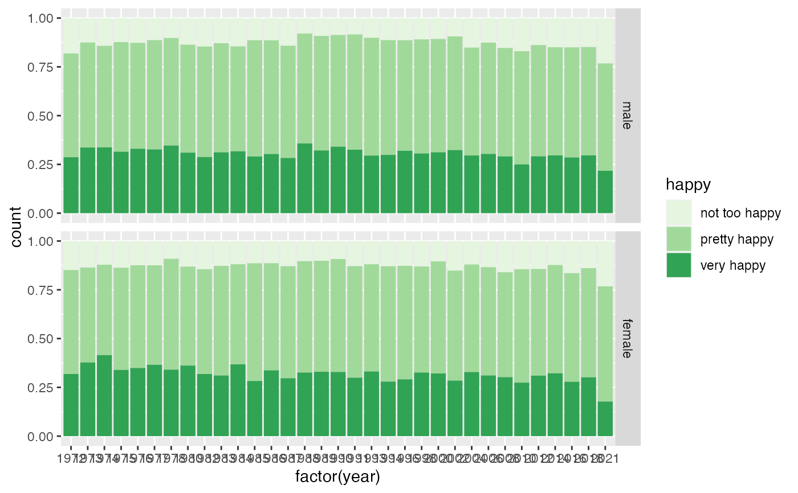

happy.RdThe data is a small sample of variables related to happiness from the general social survey (GSS). The GSS is a yearly cross-sectional survey of Americans, run since 1972. We combine data for more than 25 years to yield over 60 thousand observations, and of the over 5,000 variables, we select some variables that are related to happiness:
data(happy)A data frame with 68846 rows and 12 variables
year. year of the response, 1972 to 2018.
age. age in years: 18--89 (89 stands for all 89 year olds and older).
degree. highest education: lt high school, high school, junior college, bachelor, graduate.
finrela. how is your financial status compared to others: far below, below average, average, above average, far above.
happy. happiness: very happy, pretty happy, not too happy.
health. health: excellent, good, fair, poor.
marital. marital status: married, never married, divorced, widowed, separated.
sex. sex: female, male.
polviews. from extremely conservative to extremely liberal.
partyid. party identification: strong republican, not str republican, ind near rep, independent, ind near dem, not str democrat, strong democrat, other party.
wtssall. probability weight. applicable to years up to 2018
wtssnr. probability weight. applicable to years from 2004
library(dplyr)
#>
#> Attaching package: ‘dplyr’
#> The following objects are masked from ‘package:stats’:
#>
#> filter, lag
#> The following objects are masked from ‘package:base’:
#>
#> intersect, setdiff, setequal, union
library(ggplot2)
happy %>%
filter(!is.na(happy), !is.na(sex)) %>%
ggplot(aes(x = factor(year), fill = happy)) +
geom_bar(position = "fill") +
facet_grid(sex~.) +
scale_fill_brewer(palette="Greens")
